mc світи
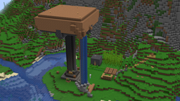
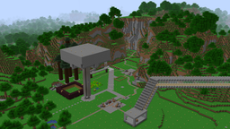
mc світи — Карти
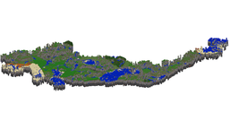
mc світи — Інвентарі
mc моди

IT

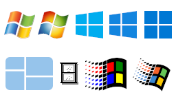

Таймлапси


ccCraft таймлапси
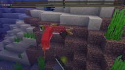
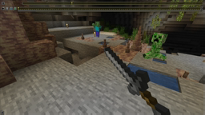
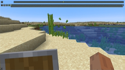
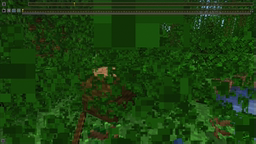
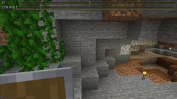
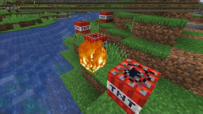
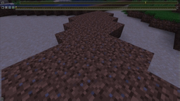
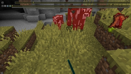
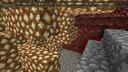
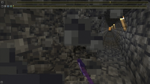
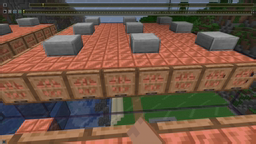
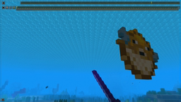
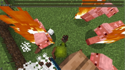
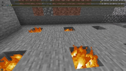
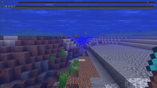
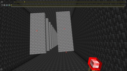
Geometry Dash

YouTube
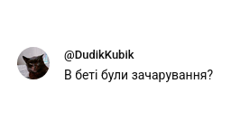
Конфлікт з язєфою

Конфлікт з язєфою — коментатори 3-й сорт
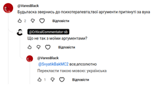
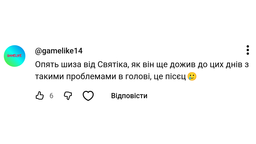
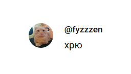
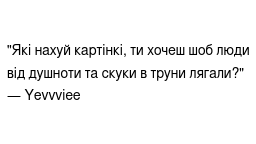
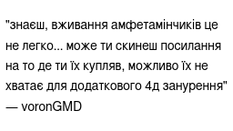
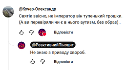
Конфлікт з язєфою — коментатори 2-й сорт
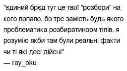
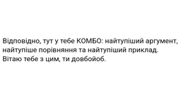
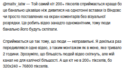
Конфлікт з Одинадцятим
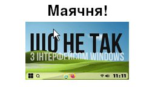